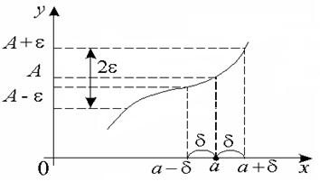

11.1 Определение предела функции
Определение предела по Гейне (на языке
последовательностей).
Число  называется пределом
функции
называется пределом
функции  в точке
в точке  , если для любой последовательности
, если для любой последовательности
 такой, что ,, выполняется
равенство
такой, что ,, выполняется
равенство  , которое обозначают: .
, которое обозначают: .
называется пределом
функции в точке , если для любой последовательности
такой, что ,, выполняется
равенство , которое обозначают: .Определение предела по Коши (на языке « -  »).
»).
»).Число называется пределом
функции в точке , если .
называется пределом
функции в точке , если .